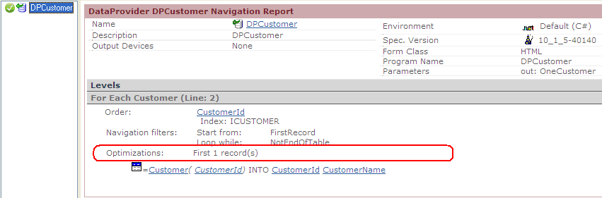

Enables returning only the first record from a navigation of many. Syntax<One>::= [One] ExampleSuppose the SDT used as Output of the data provider is not a collection because you need only the first Customer of all possible. If the data provider is written as follows, the result was the last Customer (because the data provider will read all the table and would modify the SDT to return with each Customer).
OneCustomer
{
CustomerId
CustomerName
}
Data
The result would be: <OneCustomer> <CustomerId>3</CustomerId> <CustomerName>Customer three</CustomerName> </OneCustomer> The generated select is as follows, which does not have good performance, because to obtain only one record it reads all the table. SELECT [CustomerName], [CustomerId] FROM [Customer] WITH (NOLOCK) ORDER BY [CustomerId] In order to improve this case the clause [one] was implemented, if you now write:
OneCustomer [one]
{
CustomerId
CustomerName
}
The result would be: <OneCustomer> <CustomerId>1</CustomerId> <CustomerName>Customer one</CustomerName> </OneCustomer> The performance is improved because the generated select in that case is: SELECT TOP 1 [CustomerName], [CustomerId] FROM [Customer] WITH (NOLOCK) ORDER BY [CustomerId] Note that in the data provider navigation: 
|
| Backlinks | |
| Data provider Group statement | Toc:Data Provider language |